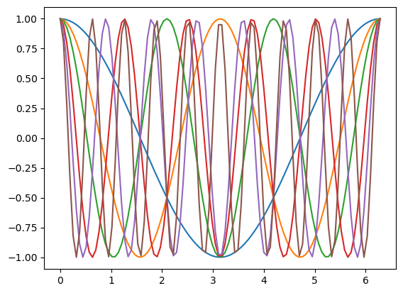
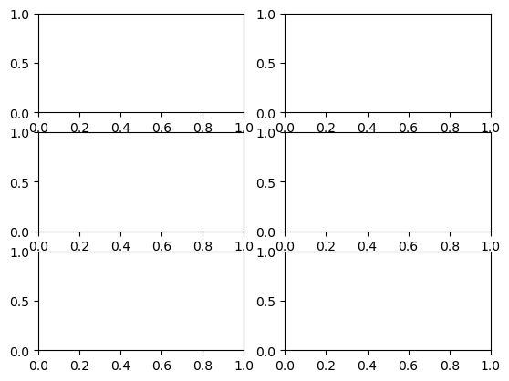
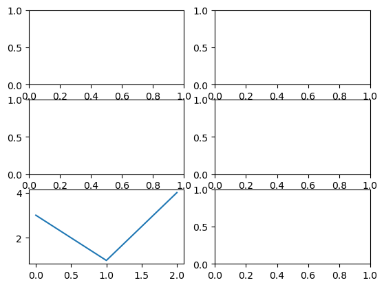
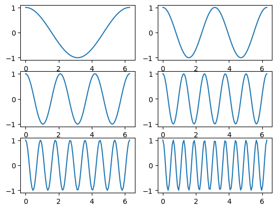

Discussion 12: July 19th, 2024#
Multiple Plots#
goal: plot \(y = \cos(kx)\) for \(k = 1, 2, 3, 5, 7, 10\) between \(x=0\) and \(x=2\pi\) on single axes and multiple axes
import numpy as np
import matplotlib.pyplot as plt
k_list = [1, 2, 3, 5, 7, 10]
x = np.linspace(0, 2*np.pi, 100)
fig, ax = plt.subplots()
for k in k_list:
f = lambda x: np.cos(k * x)
y = f(x)
ax.plot(x,y);

help(plt.subplots)
Help on function subplots in module matplotlib.pyplot:
subplots(nrows: 'int' = 1, ncols: 'int' = 1, *, sharex: "bool | Literal['none', 'all', 'row', 'col']" = False, sharey: "bool | Literal['none', 'all', 'row', 'col']" = False, squeeze: 'bool' = True, width_ratios: 'Sequence[float] | None' = None, height_ratios: 'Sequence[float] | None' = None, subplot_kw: 'dict[str, Any] | None' = None, gridspec_kw: 'dict[str, Any] | None' = None, **fig_kw) -> 'tuple[Figure, Any]'
Create a figure and a set of subplots.
This utility wrapper makes it convenient to create common layouts of
subplots, including the enclosing figure object, in a single call.
Parameters
----------
nrows, ncols : int, default: 1
Number of rows/columns of the subplot grid.
sharex, sharey : bool or {'none', 'all', 'row', 'col'}, default: False
Controls sharing of properties among x (*sharex*) or y (*sharey*)
axes:
- True or 'all': x- or y-axis will be shared among all subplots.
- False or 'none': each subplot x- or y-axis will be independent.
- 'row': each subplot row will share an x- or y-axis.
- 'col': each subplot column will share an x- or y-axis.
When subplots have a shared x-axis along a column, only the x tick
labels of the bottom subplot are created. Similarly, when subplots
have a shared y-axis along a row, only the y tick labels of the first
column subplot are created. To later turn other subplots' ticklabels
on, use `~matplotlib.axes.Axes.tick_params`.
When subplots have a shared axis that has units, calling
`.Axis.set_units` will update each axis with the new units.
Note that it is not possible to unshare axes.
squeeze : bool, default: True
- If True, extra dimensions are squeezed out from the returned
array of `~matplotlib.axes.Axes`:
- if only one subplot is constructed (nrows=ncols=1), the
resulting single Axes object is returned as a scalar.
- for Nx1 or 1xM subplots, the returned object is a 1D numpy
object array of Axes objects.
- for NxM, subplots with N>1 and M>1 are returned as a 2D array.
- If False, no squeezing at all is done: the returned Axes object is
always a 2D array containing Axes instances, even if it ends up
being 1x1.
width_ratios : array-like of length *ncols*, optional
Defines the relative widths of the columns. Each column gets a
relative width of ``width_ratios[i] / sum(width_ratios)``.
If not given, all columns will have the same width. Equivalent
to ``gridspec_kw={'width_ratios': [...]}``.
height_ratios : array-like of length *nrows*, optional
Defines the relative heights of the rows. Each row gets a
relative height of ``height_ratios[i] / sum(height_ratios)``.
If not given, all rows will have the same height. Convenience
for ``gridspec_kw={'height_ratios': [...]}``.
subplot_kw : dict, optional
Dict with keywords passed to the
`~matplotlib.figure.Figure.add_subplot` call used to create each
subplot.
gridspec_kw : dict, optional
Dict with keywords passed to the `~matplotlib.gridspec.GridSpec`
constructor used to create the grid the subplots are placed on.
**fig_kw
All additional keyword arguments are passed to the
`.pyplot.figure` call.
Returns
-------
fig : `.Figure`
ax : `~matplotlib.axes.Axes` or array of Axes
*ax* can be either a single `~.axes.Axes` object, or an array of Axes
objects if more than one subplot was created. The dimensions of the
resulting array can be controlled with the squeeze keyword, see above.
Typical idioms for handling the return value are::
# using the variable ax for single a Axes
fig, ax = plt.subplots()
# using the variable axs for multiple Axes
fig, axs = plt.subplots(2, 2)
# using tuple unpacking for multiple Axes
fig, (ax1, ax2) = plt.subplots(1, 2)
fig, ((ax1, ax2), (ax3, ax4)) = plt.subplots(2, 2)
The names ``ax`` and pluralized ``axs`` are preferred over ``axes``
because for the latter it's not clear if it refers to a single
`~.axes.Axes` instance or a collection of these.
See Also
--------
.pyplot.figure
.pyplot.subplot
.pyplot.axes
.Figure.subplots
.Figure.add_subplot
Examples
--------
::
# First create some toy data:
x = np.linspace(0, 2*np.pi, 400)
y = np.sin(x**2)
# Create just a figure and only one subplot
fig, ax = plt.subplots()
ax.plot(x, y)
ax.set_title('Simple plot')
# Create two subplots and unpack the output array immediately
f, (ax1, ax2) = plt.subplots(1, 2, sharey=True)
ax1.plot(x, y)
ax1.set_title('Sharing Y axis')
ax2.scatter(x, y)
# Create four polar Axes and access them through the returned array
fig, axs = plt.subplots(2, 2, subplot_kw=dict(projection="polar"))
axs[0, 0].plot(x, y)
axs[1, 1].scatter(x, y)
# Share a X axis with each column of subplots
plt.subplots(2, 2, sharex='col')
# Share a Y axis with each row of subplots
plt.subplots(2, 2, sharey='row')
# Share both X and Y axes with all subplots
plt.subplots(2, 2, sharex='all', sharey='all')
# Note that this is the same as
plt.subplots(2, 2, sharex=True, sharey=True)
# Create figure number 10 with a single subplot
# and clears it if it already exists.
fig, ax = plt.subplots(num=10, clear=True)
fig, axs = plt.subplots(3,2)

type(axs)
numpy.ndarray
axs.shape
(3, 2)
axs_flat = axs.reshape(-1)
axs_flat[4].plot([3, 1, 4]);
fig

fig, axs = plt.subplots(3, 2)
axs_flat = axs.reshape(-1)
for i in range(len(k_list)):
k = k_list[i]
ax = axs_flat[i]
f = lambda x: np.cos(k * x)
y = f(x)
ax.plot(x,y);

goal: see two methods to clean up this code a bit
Method 1: enumerate
for i, k in enumerate(k_list):
print(f"the value of i is {i}")
print(f"the value of k is {k}")
the value of i is 0
the value of k is 1
the value of i is 1
the value of k is 2
the value of i is 2
the value of k is 3
the value of i is 3
the value of k is 5
the value of i is 4
the value of k is 7
the value of i is 5
the value of k is 10
k_list
[1, 2, 3, 5, 7, 10]
fig, axs = plt.subplots(3, 2)
axs_flat = axs.reshape(-1)
for i, k in enumerate(k_list):
ax = axs_flat[i]
f = lambda x: np.cos(k * x)
y = f(x)
ax.plot(x,y);
a_list = [7, 8, 9]
b_list = [3, 4, 5]
for a, b in zip(a_list, b_list):
print(a, b)
7 3
8 4
9 5
fig, axs = plt.subplots(3, 2)
axs_flat = axs.reshape(-1)
for k, ax in zip(k_list, axs_flat):
f = lambda x: np.cos(k * x)
y = f(x)
ax.plot(x,y);
To Do: Please also take a look at the last video in the Matplotlib series “Adjusting the Appearance” to learn more about how to make these graphs look nice: https://www.youtube.com/watch?v=3d8ahlcQhRY